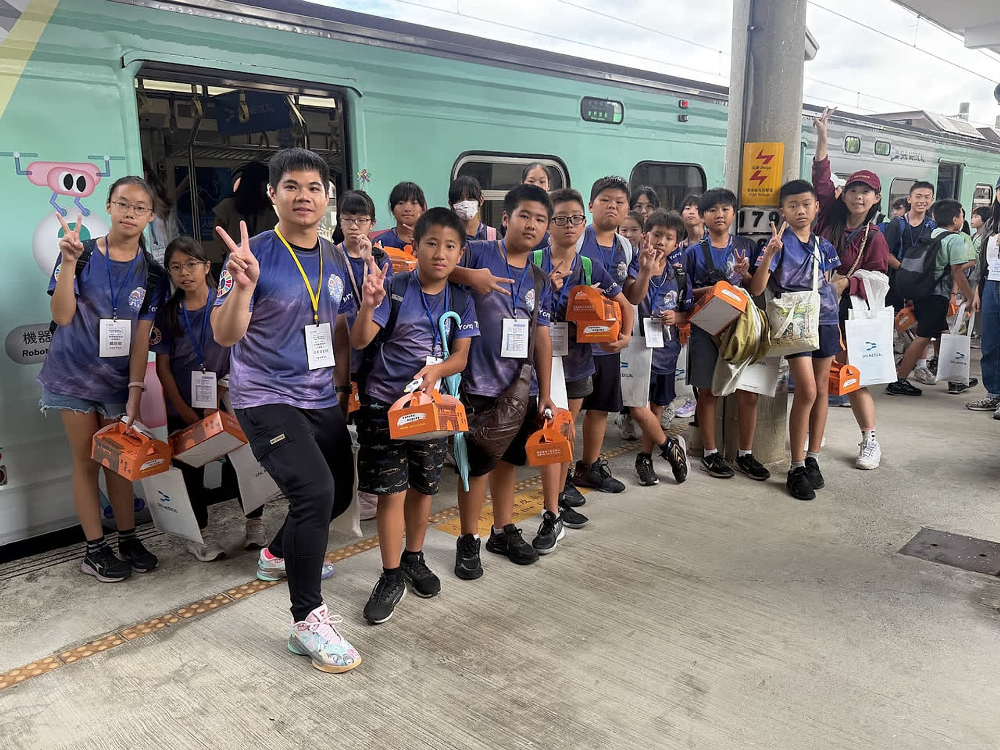

🏆 🌍 2026 台灣傑出永續教育人物獎（永貞國小推薦參選）· 環境部環境教育人員認證 · 跨域教案首獎
傑出永續教育人物 × ESD 永續發展 × 17項 SDGs 全方位實踐
2026 台灣傑出永續教育人物：STREAM × SEL × SDGs 跨域實踐典範
立足 SDG 4 優質教育・首創五大評選構面 99 項實證與 93 場永續走讀數位典藏
📖 專題設計緣起與核心精神
徐秉鴻老師獲苗栗縣永貞國小推薦參選「2026 台灣傑出永續教育人物獎」（TAISE 台灣永續能源研究基金會與緯創資通共同主辦）。秉持「永續教育成於生命覺察，優質教育始於不落一人（Leave No One Behind）」之核心信念，首創「STREAM × SEL × SDGs」跨域教學模式，將聯合國 17 項永續發展目標無縫融入班級治理、濕地風電與古厝走讀、多肉植療愛心市集、竹節蟲與香蕉假莖科學探究、識字金銀島大數據適性扶弱及 TSSCI 核心期刊學術發表，建立兼具在地溫度與全球視野之永續教育典範。
# 2026台灣傑出永續教育人物 # 環境教育人員認證 # STREAM×SEL×SDGs # 不遺漏任何一人 # 五大評選構面 # 99項官方佐證 # 93場永續相簿 # 823張紀實影像
🌍 核心素養與聯合國永續指標 (SDGs) 對應
SDG 4 & 10
優質教育與減少不平等
導入識字金銀島與因材網大數據適性診斷（30人次登全國英雄榜）、深耕永齡希望小學課輔與 MSSR 晨讀，落實 Leave No One Behind。
SDG 11 & 12
永續城鄉與責任消費生產
走讀蘆竹湳三百年紅磚聚落、推動統一超商搶救剩食大作戰、大樹桑葉高值化循環、旗山產地餐桌與多肉教室綠色公益義賣。
SDG 13, 14 & 15
氣候行動與海陸生態保育
高美濕地離岸風電考察、阿朗壹古道與鵝鑾鼻地質踏查、茄萣濕地里山倡議、四草牽罟漁文化、多肉抗旱生理與竹節蟲生命探究。
🧩 核心模組與教學實踐架構
構面一：永續教育理念與班級經營（佐證 1-01 ～ 1-19）
全人奠基、SDGs 輪環班服與「以植為鏡」心靈韌性
具備環境部環境教育人員認證及教育部自然、數位雙精熟級認證；於教室懸掛 UN SDGs 彩色錦旗，設計全班 17 人對應 17 項指標之 SDGs 輪環班服；推行節能長與零剩食行動；設置多肉角將植物抗旱生理轉譯為學童情緒調適，獲客家電視台新聞專題報導。
構面二：課程教學與生活實踐（佐證 2-01 ～ 2-27）
STREAM × SEL × SDGs 五大軸線與山海聚落走讀
開創「以植為鏡、以水為源、以藝養韌、以行傳愛、仿生綠創」五軸課程：帶領學童進行搶救剩食大作戰、高美濕地風電考察、科工館綠能走讀、廣達鳴蟲特展導覽、蘆竹湳紅磚古厝瓦當版畫轉譯、四草牽罟與旗山美濃食農共學，勇奪苗栗縣跨領域素養教案全縣首獎。
構面三 ＆ 構面四：學生卓越展能與親師社區共好（佐證 3-01 ～ 4-12）
雙料全國科探冠軍、全人永續成果地圖與科普環島列車倡議
指導國小組《竹節蟲黃二的生命奇蹟》獲 2026 全國科探入選、國中組香蕉假莖滑板與大專組熱對流雙奪全國第一名；指導學童童詩屢登《國語日報》、獲夢花文學獎與文狀元、樂樂棒奪全縣雙亞軍；舉辦校慶多肉公益市集、引領學校獲「2026明日閱讀典範學校」、率隊進駐國科會科普環島列車與臺灣教育科技展。
構面五：教育創新、學術引領與典範擴散（佐證 5-01 ～ 5-25）
教育部美感標竿學校、TSSCI 第一作者與夢N實踐家講師
引領永貞國小獲教育部跨領域美感 115 標竿學校與 114 種子學校；入選親子天下教育創新 100；考取高師大科環所博士班，以第一作者於 TSSCI 第一級《科學教育學刊》發表 40 頁重磅論文及 10 篇國際/全國研討會論文；取得教育部夢的N次方 115 實踐家講師認證巡迴全國授課。
🏫 教學與獲獎實踐紀實、校長推薦評語與 300 字永續教育理念
徐秉鴻老師｜STEM 科學探究與跨域教育實踐現場（個人封面形象照）
秉持「教學維持動能、輔導點燃希望、行政懷抱熱忱」之教育初心，於全國科學教育與 STEM 展覽現場實踐跨域探究教學
候選人教學實況照（帶領學童進行 STREAM 跨域實作）
於永貞國小教室帶領學童進行 STREAM 跨域實作與班級說書歷程
候選人獲獎榮耀照（全國科學探究競賽金獎頒獎典禮）
指導學生榮獲全國科學探究競賽第一名（金獎）完整頒獎典禮合照

候選人科普走讀照（國科會臺灣科普環島列車師生合影）
帶領全班身穿 SDGs 班服參與國科會臺灣科普環島列車跨域走讀
🌱 永續教育理念及自我期許（附件三 300 字核心自述）
身為苗栗縣永貞國小專任教師兼文書組長、高師大科環所博士研究生，並持有環境部環境教育人員認證，我深信「永續教育成於生命覺察，優質教育始於不落一人（Leave No One Behind）」。我以聯合國永續發展目標（SDGs）為導航，立足 SDG 4 優質教育，創發「STREAM × SEL × SDGs」跨域教學模式，將多肉抗旱生理轉譯為學童心靈韌性，引導學生走出課堂，投身濕地風電走讀、剩食搶救、農事共學、聚落文資踏查與愛心市集利他實踐；同時以「識字金銀島」大數據適性診斷消弭閱讀落差，培育兼具全球視野、社會同理與環境行動力之永續世界公民。扎根在地、跨域共好、展望未來。
🏫 推薦單位（苗栗縣頭份市永貞國民小學（鍾瑞蓉 校長推薦｜統編：02931331））推薦意見摘錄：
📑 官方送審四件套與簡章 PDF 原件預覽與下載
核心佐證全集 · 99項實證
PDF 數位原件
📄 04. 推薦報名－佐證資料－徐秉鴻（2026台灣傑出永續教育人物獎・五大構面99項佐證完整專冊 PDF）
依「2026台灣傑出永續教育人物獎」國民小學組五大評選構面分類編號，完整收錄 7 篇全國媒體專題報導與 99 項（佐證 1-01 ～ 5-25）高清獎狀、證書、走讀紀實、學生作品與 TSSCI 論文佐證。
5,000字實踐報告 · 17項大獎
PDF 數位原件
📄 03. 附件三：永續教育成果報告－徐秉鴻（微調契合版・永續教育理念摘要、五大構面5,000字自述與17項代表性榮譽表 PDF）
完整闡述「永續教育成於生命覺察，優質教育始於不落一人（Leave No One Behind）」核心理念，以及五大評選構面（班級經營、STREAM×SEL×SDGs跨域創新、學生學習成果、親師社區參與、教育創新與學術發表）之系統化實踐成果。
永貞國小官方推薦
PDF 數位原件
📄 01. 附件一：推薦資料表－徐秉鴻（苗栗縣頭份市永貞國民小學 鍾瑞蓉校長推薦參選表 PDF）
由服務學校苗栗縣頭份市永貞國民小學（鍾瑞蓉校長）具名推薦參選 2026 台灣傑出永續教育人物獎（國民小學組），詳述候選人創設多肉教室、深耕蘆竹湳走讀、實踐教育平權與發表 TSSCI 期刊之卓越貢獻。
學經歷與專業資歷
PDF 數位原件
📄 02. 附件二：候選人基本資料表－徐秉鴻（學經歷、環境教育認證與現任職務總表 PDF）
彙整候選人徐秉鴻老師之學歷（高師大科環所博士班、科環所碩士、數學系學士）與五項重要教育工作經歷（永貞國小導師兼圖書教師與文書組長、苗栗縣國際教育中心專員、教育部跨領域美感種子教師、普門中學科展指導、永齡希望小學課輔教師）。
TAISE × 緯創資通主辦
PDF 數位原件
📄 2026 台灣傑出永續教育人物獎 活動簡章與評選規準（TAISE 台灣永續能源研究基金會 × 緯創資通）
教育部與行政院國家永續發展委員會指導、財團法人台灣永續能源研究基金會（TAISE）與緯創資通共同主辦之「2026台灣傑出永續教育人物獎」官方活動簡章與五大評選構面權重指標。
🏆 候選人歷年代表性永續與科學教育獲獎紀錄總表（17 項精選殊榮）
#
核定年度
獲獎級別與殊榮名稱
頒發／主辦機關
對應官方佐證
1
114學年度
品德教育－品德主題故事類－全國甲組入選
教育部
📌 佐證 1-06
2
112學年度
人權教育教案競賽－全國佳作
教育部
📌 佐證 2-16
3
110學年度
教育實習績優獎－全國實習學生優良獎
教育部
📌 佐證 1-01
4
2026
2026全國科學探究競賽－教師組全國第三名
教育部國教署
📌 佐證 5-06
5
2025
2025全國科學探究競賽－指導大專社會組全國第一名（金獎）
教育部國教署
📌 佐證 3-04
6
2024
2024全國科學探究競賽－參加大專社會組全國第三名
教育部國教署
📌 佐證 5-07
7
2023
2023全國科學探究競賽－教師組兩份並列全國佳作
教育部國教署
📌 佐證 5-08
8
2022
2022全國科學探究競賽－指導普門中學團隊全國第一名（首獎）
教育部國教署
📌 佐證 3-03
9
2021
2021教育創新100－苗栗公館國中跨域素讀教師社群
親子天下
📌 佐證 5-05
10
2023
2023永齡希望小學－優良課輔教師
鴻海永齡慈善教育基金會
📌 佐證 1-11
11
114學年度
苗栗縣國際教育優良課程方案徵選活動－佳作
苗栗縣政府
📌 佐證 4-05
12
114學年度
苗栗縣素養導向優良試題與標準本位評量示例競賽－優選
苗栗縣政府
📌 佐證 2-18
13
114學年度
苗栗縣跨領域素養導向課程教案設計組－首獎（第一名）
苗栗縣政府
📌 佐證 2-17
14
114年
苗栗縣毒品危害防制融入課程教案比賽－特優（第一名）
苗栗縣政府
📌 佐證 1-07
15
114學年度
苗栗縣生命教育課程教案徵選－《快樂的祕密配方》優等
苗栗縣政府
📌 佐證 1-08
16
114學年度
苗栗縣生命教育課程教案徵選－《我,是誰?我們,是誰?》優等
苗栗縣政府
📌 佐證 1-09
17
111學年度
國立高雄師範大學《新課綱實務課程》教案比賽－優等
國立高雄師範大學
📌 佐證 2-19
🌱 第一構面：永續教育理念與班級經營（全人奠基與日常情境浸潤 · 19 項佐證）
SDG 4
教育部 110學年度 教育實習績優獎 全國實習學生優良獎
榮獲教育部全國師資培育最高榮譽，展現卓越之教育初衷與深厚專業素養，為推展以學生為中心的永續素養教育奠定堅實磐石。
SDG 4 SDG 13
永貞國小親師座談會：太空看地球宏觀視野、生活低碳實踐與永續教育親師同行
於全校親師座談會向全班家長倡議「太空看地球」環境宏觀視野，共構家庭減塑、節能減碳與環境永續實踐指引，凝聚親師生共同守護地球之教育共識。
SDG 12 SDG 13
綠色校園生活實踐與班級自主環境治理：四類精細資源回收、節能巡檢與環境維護日常化
由學童輪值擔任班級「節能小糾察」與「環保幹部」，自主落實離峰時段隨手關燈、冷氣控溫、水資源細緻節約及精細四類資源垃圾分類，將低碳永續內化為日常素養。
SDG 4 SDG 17
「115 年度國小圖書館閱讀推動教師進階研習」培訓證書
完成教育部國教署委託臺師大辦理之 14 小時圖書館閱讀推動教師進階培訓，精進館藏資源整合、閱讀策略教學、資訊素養引導與跨領域閱讀課程規劃等專業知能，具備國小圖書教師深化校園閱讀推展與閱讀課程領導之專業資格。
SDG 4 SDG 17
「明日閱讀聊書典範教師」專業認證
G:\我的雲端硬碟\永續SDGs\【證書與獎狀】已整理20261005\2026明日閱讀典範教師證書.png 深耕「身教式持續安靜閱讀（MSSR）」理念，發展課堂同儕聊書與對話引導策略，營造以學生為中心的校園閱讀社群，榮獲「明日閱讀聊書典範教師」認證。
SDG 4 SDG 16
教育部 114學年度 品德教育「品德主題故事類」全國甲組入選
以生活情境與生命教育引導學童開展自主道德思辨，將環境關懷、同理心與人際共好深植於日常品德素養，落實生活實踐。
SDG 3 SDG 4
苗栗縣 114年 毒品危害防制融入課程教案比賽 特優（第一名）
結合SEL社會情緒學習與心理健康促進，透過同理心與情境思辨引導學童建立健康身心防線，守護健康安全永續校園。
SDG 3 SDG 4
苗栗縣 114學年度「快樂的祕密配方」生命教育課程教案徵選 優等
引導學童探索情緒調節、感恩實踐與生命價值，促進心理健康與同儕友善支持，厚植學童心理韌性。
SDG 3 SDG 4
苗栗縣 114學年度「我，是誰？我們，是誰？」生命教育課程教案徵選 優等
探討自我認同、團體連結與人與自然和諧共存之生命哲思，引導孩子體會萬物共生共榮之美好。
SDG 4
永貞六甲全班學習成果圓滿實踐生命與永續美育大合影
G:\我的雲端硬碟\永續SDGs\03_閱讀素養與跨域美感\2025年3月28日-明日閱讀2.0 MSSR身教式安靜閱讀訪視\2025年3月28日-9-明日閱讀2.0 MSSR身教式安靜閱讀訪視.jpg 以愛與榜樣悉心灌溉，引領全班孩子在永續、美育與自主學習沃土中茁壯成長，展現親師生高度共識之卓越班級經營典範。
SDG 4 SDG 10
2023 永齡希望小學 優良課輔教師
長期深耕弱勢及學習低成就學童課後陪伴，秉持教育有教無類理念，運用差異化與心閱讀教學激發弱勢學童潛能與自信，落實不遺漏任何人。
📌 佐證 1-12
SDG 4
中華民國國民小學合格教師證書（108課綱 雙階段師資合格認證）
具備教育部核發之國民小學合格教師證書，兼具國中階段科學探究與小學全人素養雙階段師資認證，以深厚專業厚植學童永續教育根基。
SDG 4
教育部 國民小學教師學科知能評量【自然領域】達「精熟級」（最高級）專業證書
榮獲教育部國小教師學科知能「精熟級」認證，跨足自然科學、環境生態與數學邏輯，展現跨領域STREAM課程研發與教學專業實力。
SDG 4 SDG 9
教育部 國民小學教師「數位教學能力檢測」精熟級（最高級）專業證書
通過教育部數位教學能力檢測「精熟級」評定，熟稔生生用平板、教育雲端平臺與AI適性學習系統，為環境教育導入強大數位賦能。
SDG 4
永貞國小 班級經營晨光閱讀深耕：全校「班級借書總量第一名」全校冠軍獎狀
長期推動MSSR身教式持續安靜閱讀，每日晨光陪伴沉浸共讀，帶領永貞六甲學童締造全校班級圖書借閱總量第一名，深植終身自主學習風氣。
SDG 4 SDG 10
教育部因材網「學習島嶼」適性自主學習平台 指導教師感謝狀（連續多學期深耕）
積極推廣學習島嶼適性自主學習，針對學習落後學童提供個別化扶助支持，建立自信心，落實「不遺漏任何人」之教育平權。
📌 佐證 1-17
SDG 3 SDG 4
永貞國小卅九週年校慶運動大會拔河大賽：全班身穿 SDGs 彩色輪環專屬班服全力奮戰實況
全班學童身著右臂印有聯合國SDGs彩色輪環之專屬班服參與拔河決賽，將永續目標具體化為健康體魄、運動家風範與班級向心力，榮獲全場親師生熱烈喝采。
SDG 4 SDG 15
客家電視台新聞專題深入採訪永貞國小多肉校本課程：以植為鏡深植學童綠色永續與心靈韌性
客家電視台新聞團隊親赴永貞國小班級現場專訪，深入報導徐秉鴻老師帶領學童透過多肉植物逆境生理觀察結合心理韌性調適，並舉辦義賣捐助受飢兒之永續教育特色。
SDG 4 SDG 11
永貞國小雙語跨文化環境節慶活動：多元文化尊重、創意思辨與包容共好實踐
活動名稱：永貞雙語跨文化節慶體驗 ｜ 實踐年度：114學年度 結合英語情境與環保巧思引導學童參與跨文化節慶活動，在自主裝扮與闖關中融入多元文化尊重與包容，落實優質教育平權理念。
🔬 第二構面：課程教學與生活實踐（STREAM × SEL × SDGs 跨域創新 · 27 項佐證）
📌 佐證 2-01
SDG 2 SDG 12
永貞六甲「搶救剩食大作戰」跨界共創永續惜食行動
將企業ESG資源轉化為校本永續教案，引導學童由午餐「零剩食」出發，深入探討格外品產銷與糧食不浪費議題，並透過桌遊與手繪繪本推廣惜食觀念。
SDG 7 SDG 13 SDG 14 SDG 15
台中高美濕地與離岸風電綠能跨域走讀考察
帶領全班著SDGs班服實地考察潮間帶動植物生態與風力發電運作，引導孩子思辨綠色能源發展與陸域水下生態保全之平衡。
SDG 14 SDG 15 SDG 4
琅嶠卑南古道（阿朗壹古道）海岸地質景觀與原始生態走讀
實地走讀台灣少數未受公路開發之原始天然海岸，觀察南田石海蝕地形與原始熱帶植被，深化對海陸生態系統脆弱性之守護意識。
SDG 14 SDG 15 SDG 4
里山倡議與水陸生物多樣性跨域課程：流域連通與生態對話實踐
以聯合國里山倡議為核心理念，帶領學童實地踏查高雄茄萣濕地，進行水質檢測與鳥類生態觀察，體認「從山林到海洋」之流域生命共同體，培養生物多樣性責任感。
SDG 14 SDG 12
永貞師生在地「漁文化」走讀踏查：台南四草牽罟與濕地生態系實地考察
帶領學童走出教室，於台南四草潟湖實地體驗牽罟傳統漁法，近距離觀察紅樹林濕地底棲生物與水鳥生態，探討過度捕撈與海岸環境變遷對海洋生態之衝擊。
SDG 12 SDG 9 SDG 4
桑葉奇蹟再現風華：農業廢棄物高值循環與在地創生教案
針對傳統蠶桑產業修剪廢棄之桑葉，設計跨學科STREAM循環經濟課程，引導學童探討桑葉茶烘焙、純露萃取與天然植物染，轉化農業剩餘資材為綠色文創商品。
SDG 2 SDG 12 SDG 4
在地農食ㄟ滋味：旗山糖廠農村共學與低碳食農在地實踐
帶領民眾、學童跨區走入友善小農甘蔗園與農作區，親手採集在地當令蔬果、烹調節氣料理，實地計算食材碳足跡與珍惜食物，培育對土地滋養的感恩與永續責任。
📌 佐證 2-08
SDG 2 SDG 12 SDG 15
旗山思原生態農場：循環農業、蚯蚓堆肥與友善農作產地踏查
考察自然農法、蚯蚓生物堆肥與零廢棄物循環農業模式，引導師生體認友善耕作對於維護土壤健康與生態多樣性之重大意涵。
SDG 12 SDG 4
高雄美濃客家農事體驗活動
以永續教育為核心理念，帶領學生實地踏查美濃客家農事活動，從產地與實作體驗中培養對客家傳統農業文化與土地生態之永續關懷與態度。
SDG 15 SDG 4 SDG 11
苗栗縣公館國中山林環境教育：出礦坑歷史步道踏查與生態文史走讀
以山林環境教育與在地產業文史為核心，師生踏查出礦坑歷史步道，沿途觀察低海拔林相生態與季節植物果實，在健行中深化對地方自然生態與文史地景連結。
SDG 10 SDG 11 SDG 4
生態智慧與自然共生：新住民環境教育課程與竹編工藝實作
融合新住民家庭熱帶生態農業經驗，透過民族植物採集應用與竹編生態工藝實作，促進文化平權與環境包容，實踐人與自然共生智慧。
SDG 4 SDG 11
走讀頭份蘆竹湳三百年紅磚聚落：常民記憶踏查與斗砌解構
走出教室走入聚落，帶領學童訪查閩南傳統斗砌磚牆工藝與老厝聚落，親身體驗家鄉文化保存與城鄉永續價值。
📌 佐證 2-13
SDG 4 SDG 11
走讀蘆竹湳古厝聚落：全班學童自主導覽解說與起點集結
孩子們擔任小小解說員，自信向家長與同儕導覽蘆竹湳三百年歷史變遷，深化對鄉土土地之認同與情感連結。
SDG 4 SDG 11
常民美感與瓦當轉譯：陶藝捏塑與凸版版畫跨域美育實作
引導學童親手捏塑陶土並雕製版畫，將在地紅磚傳統圖騰轉譯為現代生活美感，連結土地記憶與文化資產永續。
SDG 4 SDG 10
東南亞跨領域多元文化閱讀素養專業研習與教案研發
深化對東南亞新住民母國文化與生態智慧之理解，將跨國文化繪本轉譯為校本多元文化環境教育教材。
SDG 4 SDG 10 SDG 16
教育部 112學年度 人權教育教案競賽 全國佳作
深入探討環境正義、原住民傳統領域與多元文化弱勢權益，將人權尊重與平等價值無縫轉化為具體課堂探究與行動實踐。
SDG 4 SDG 11
苗栗縣 114學年度 跨領域素養導向課程教案設計組 首獎（第一名）
整合自然科學、語文、美感與永續城鄉之卓越教案，以完整教學架構與豐富學生活動歷程奪得全縣第一名最高榮譽。
SDG 4
苗栗縣 114學年度 素養導向優良試題與標準本位評量示例競賽 優選
研發情境化、生活化之永續發展評量示例，將環境問題解決能力納入評量指標，以評量引導自主探究學習。
SDG 4
國立高雄師範大學 111學年度《新課綱實務課程》教案比賽 優等
落實108課綱核心素養導向教學，將STREAM跨領域探究與永續生活實踐融合於國小課堂教學模組中。
SDG 4 SDG 17
天下雜誌教育基金會 國際閱讀教育論壇 跨領域研習培力
積極吸收國際前瞻閱讀素養教學法與跨學科永續教育新知，將「以閱讀啟發環境行動」理念深植於校園日常教學。
SDG 4
教育部國教署 × 臺灣師大「國中數學活動師」專業培訓合格證書
取得數學活動師專業認證，將數學生活化、幾何美感與環境生態對稱規律融入跨學科STREAM實作教案，活化學生科學思維與空間美感。
SDG 4 SDG 11
苗栗縣政府 114學年度「跨領域素養導向課程教案第一名（首獎）」官方審定著作分數核定證明
經苗栗縣政府專業專家委員嚴格盲審核定，教案完整融合自然科學、語文、美感與永續城鄉，榮獲全縣第一名最高著作分數審定肯定。
SDG 7 SDG 13
國立科學工藝博物館綠能科技與氣候行動跨域走讀
帶領學童沉浸式探索科工館綠能生活展廳，親手操作離岸風力發電模型、太陽能光電陣列與碳捕捉互動教具，引導學生反思生活節能與國家能源轉型之重大意義。
SDG 4 SDG 15
廣達游於藝「鳴蟲特展」探索自然生態藝術展演
引進廣達游於藝自然生態巡迴展，指導學童化身為「生態藝術小尖兵」，自主向全校親師生解說齊白石草蟲工筆畫與翠玉白菜之生態，深化美感教育與自然永續關懷。
SDG 6 SDG 11
六堆客家聚落蕭家古厝「半月池」水生態文化走讀
走讀屏東佳冬三級古蹟蕭家古厝，探究常民風水聚落中「半月池」之蓄水、降溫與微氣候調節智慧，深耕傳統文化中的永續水資源倫理。
SDG 14 SDG 15
墾丁國家公園鵝鑾鼻海岸地質踏查：臺灣最南點隆起珊瑚礁與海岸生態保育
實地考察臺灣最南端鵝鑾鼻隆起珊瑚礁石灰岩地形與濱海植被，探究海陸交界生態系面臨之環境挑戰，厚植陸域與海洋永續保護素養。
SDG 11 SDG 16
金門太武山戰地史蹟與地質踏查：花崗片麻岩地貌、文化遺產保存與和平教育
踏查金門太武山花崗片麻岩地質特徵與戰地防禦工事，將歷史傷痕轉譯為珍惜民主和平之生命教育，實踐文化保存與和平制度之永續願景。
🎓 第三構面：學生學習成果（探究深耕、多元卓越與永續素養實踐 · 16 項佐證）
SDG 4 SDG 15
2026 全國科學探究競賽 國小組入選：竹節蟲黃二的生命奇蹟（核定獎狀）
指導永貞國小六年級學童白羽菲、高靖芸深入探究本土竹節蟲之生命史與擬態機制，引導孩子親近自然、守護生物多樣性。
SDG 4 SDG 15
2026 全國科學探究競賽 國小組入選：竹節蟲黃二的生命奇蹟
徐秉鴻老師指導班級學童深入校園採集與飼育竹節蟲，歷經多月系統化觀察紀錄與模型實驗，榮獲國教署全國科學探究競賽入選，具體實踐生命教育與生物多樣性素養。
SDG 12 SDG 9 SDG 4
2022 全國科學探究競賽－這樣教我就懂 指導國中組 全國第一名（首獎）
帶領國三學生探究香蕉假莖纖維力學結構，運用3D科技建模將農業廢棄物研發為高韌性環保滑板，獲國語日報與人間福報頭版專題讚揚。
SDG 4 SDG 17
2025 全國科學探究競賽－這樣教我就懂 指導大專社會組 全國第一名（金獎）
指導大專青年與在職教師團隊，結合理論研究與常民生活熱對流科學，奪得全國冠軍首獎，受國立教育廣播電台全國專訪倡議。
SDG 4
苗栗縣「文狀元」選拔競賽 指導學童獲獎頒獎典禮
深耕學童文字書寫、批判思辨與文采表達，指導學生於全縣最高榮譽文狀元寫作競賽中獲五年級秀才獎，展現卓越之語文素養奠基成效。
SDG 4
永貞六甲成果展（一）：學童分組自主永續專案探究與海報導覽
孩子們歷經兩年系統性培育，自信地向全校師生與家長解說自主研發之永續減塑、校園剩食與生物多樣性提案模型與研究海報。
SDG 4
【永貞六甲多元跨域學習成果永續地圖】「以生為本、全人永續」之扎實教學歷程。
【永貞六甲多元跨域學習成果永續地圖】「以生為本、全人永續」之扎實教學歷程。
SDG 4
【永貞六甲多元跨域學習成果展】畢業成果大展盛況「永續生活實踐與文創作品」
【永貞六甲多元跨域學習成果展】畢業成果大展盛況「永續生活實踐與文創作品」
📌 佐證 3-09
SDG 4
永貞六甲成果展（二）：MSSR晨光閱讀札記與深度思辨成果展示
完整展出全班兩年來累積之數百篇自主閱讀手札、永續心智圖與同儕互評思辨札記，生動印證「以閱讀厚植永續素養」之深邃成效。
📌 佐證 3-10
SDG 4 SDG 15
指導永貞學童環境童詩連續榮登《國語日報》專題版面
指導班級學童走出課堂，將生態走讀、植物觀察與生活思辨轉化為文字，屢獲《國語日報》刊載露出，展現卓越語文素養奠基。
📌 佐證 3-11
SDG 4
指導學童榮獲苗栗縣第28屆「夢花文學獎」小夢花兒童詩【優選】（獲獎學童：鍾姿涵）
引導學童結合生活環境反思與自然美感開展詩意創作，榮獲全縣最高榮譽文學獎「夢花文學獎」兒童詩優選，深獲全縣評審讚賞。
📌 佐證 3-12
SDG 4
中華明日閱讀協會「2025明日說書人」全國博覽會 指導教師獎狀（指導高靖芸、楊雅閑）
指導永貞學童以自信口語表達深度闡述生態與永續繪本故事，展現獨立思考、同理共情與公眾倡議素養，深獲全國博覽會肯定。
📌 佐證 3-13
SDG 3 SDG 4
組訓永貞樂樂棒球隊榮獲「115年苗栗縣長盃樂樂棒球錦標賽」全縣第二名
樂樂棒球隊，學生身著臂章印有SDGs輪環戰袍全力奮戰，榮獲全縣第二名亞軍，完美展現學童健康、挫折容忍力與團隊合作之全人永續教育成果。
📌 佐證 3-14
SDG 3 SDG 4
苗栗縣體育會理事長盃樂樂棒球錦標賽全縣亞軍
理事長盃錦標賽勇奪全縣亞軍，展現高度班級凝聚力、運動耐力與身心健康之全人素養。
📌 佐證 3-15
SDG 4 SDG 9
全國科學探究競賽指導榮耀與「Fun手Fun心學數學」：學生跨域數學與科學探究實踐
指導學生於全國科學探究競賽舞台展能，結合生活情境與幾何操作推動「Fun手Fun心學數學」，培育學生解決未知問題的探究素養。
📌 佐證 3-16
SDG 4
中央大學明日閱讀 2.0 訪視專家指導：永貞學童身教式安靜閱讀與自主分組聊書展能
中央大學明日閱讀專家團隊入班訪視指導，學童展現專注身教式安靜閱讀並登台自主聊書分享，體現自主學習與深層閱讀素養之深耕成果。
🤝 第四構面：親師合作及社區參與（在地創生、公益利他與全球視野倡議 · 12 項佐證）
📌 佐證 4-01
SDG 11 SDG 12 SDG 4
永貞國小校慶園遊會：學童親植多肉植物與綠色公益愛心義賣
學童將校本多肉教室親手扦插繁衍之植栽與手捏陶盆於校慶設攤義賣，義賣所得捐贈弱勢公益團體，實踐生態教育與慈愛關懷。
📌 佐證 4-02
SDG 4 SDG 7 SDG 9
國科會「2025臺灣科普環島列車」苗栗後龍站
率領永貞國小師生團隊代表苗栗縣擔任科普環島列車科學關主，於月台與車廂向全台民眾與學子推廣全民科學素養與永續科普教育。
📌 佐證 4-03
SDG 4 SDG 10 SDG 11
苗栗縣 世界母語日 跨國多元文化國際倡議（永貞六甲師生）
永貞六甲學童融合客語、原住民族語及東南亞新住民語言，進行多語文化展演與環境倡議短片拍攝，落實文化平權與跨族群融合。
📌 佐證 4-04
SDG 4 SDG 17
苗栗縣國際教育中心專員證書
兼任苗栗縣國際教育中心專員，協助全縣推展國際教育2.0架構，導入聯合國永續發展目標（SDGs）與國際夥伴學校推展線上文化交流。
📌 佐證 4-05
SDG 4 SDG 17
苗栗縣 114學年度 國際教育優良課程方案徵選 佳作
設計在地國際化接軌課程，引領學童從苗栗家鄉產業出發，對標聯合國永續發展目標，培養全球視野與在地關懷公民責任。
📌 佐證 4-06
SDG 4 SDG 17
苗栗縣國際教育中心在地國際化課程轉譯成果展
策劃展出苗栗學童以SDGs為核心之在地國際化轉譯成果，向全縣親師生展現以在地文化為根、全球永續為翼之豐碩教育成果。
📌 佐證 4-07
SDG 4 SDG 12
國立教育廣播電台 2022年受訪分享證明
接受《青年Let's talk》全國直播專訪，分享指導普門中學以香蕉假莖研發環保滑板奪冠之科學探究與資源永續教學心法。
📌 佐證 4-08
SDG 4 SDG 17
國立教育廣播電台 2025年受訪分享證明
二度受邀接受《青年Let's talk》專訪，分享結合日常飲食生活與熱學科學探究奪冠歷程，向全國推廣生活中處處是探究之科學素養。
📌 佐證 4-09
SDG 4 SDG 17
中華明日閱讀協會「2026明日閱讀典範學校」
協助學校與全校教師推動MSSR閱讀深耕，帶動家長晨光共讀與社區閱讀推廣，榮獲全國明日閱讀典範學校最高肯定，展現親師生高度共識。
📌 佐證 4-10
SDG 4 SDG 17
教育部跨領域美感教育卓越領航計畫合作學校授證典禮
代表學校出席教育部跨領域美感教育卓越領航計畫全國授證典禮，攜手跨校種子教師共構美育社群，將永續生活美感扎根於國民小學校園。
📌 佐證 4-11
SDG 4 SDG 17
臺灣教育科技展
參與「擁抱AI 共學未來」與適性診斷成果，擴散數位永續典範。
📌 佐證 4-12
SDG 4 SDG 10
國家圖書館「2025臺灣閱讀節」推廣識字金銀島
G:\我的雲端硬碟\永續SDGs\03_閱讀素養與跨域美感\2025年12月6日-2025臺灣閱讀節推廣識字金銀島\2025年12月6日-5-2025臺灣閱讀節推廣識字金銀島.jpg 於國家圖書館臺灣閱讀節設立教育推廣攤位，向廣大親子與教育工作者倡議「識字金銀島」大數據適性診斷，弭平城鄉落差實踐教育平權。
💡 第五構面：教育創新（跨域典範領航、大數據賦能與教師研究者實踐 · 25 項佐證）
📌 佐證 5-01
SDG 4 SDG 11
教育部跨領域美感教育卓越領航計畫：115學年度推動標竿學校
以「融合數學、藝術與SDGs之跨領域美感課程」卓越實踐成效，獲教育部核定為跨領域美感推動標竿學校。
📌 佐證 5-02
SDG 4 SDG 11
教育部跨領域美感教育卓越領航計畫：114學年度推動種子學校
獲選為教育部美感教育種子學校，積極研發在地文化走讀、傳統瓦當拓印與永續校園生活之跨學科整合教案。
📌 佐證 5-03
SDG 4 SDG 17
教育部跨領域美感教育計畫 課程諮詢會議
代表學校出席核心專家研發諮詢，分享永貞國小融合自然科學、幾何數學與SDGs之教案研發歷程與實務經驗。
📌 佐證 5-04
SDG 4 SDG 17
114學年度 跨領域美感教育工作坊 暨 永貞六甲多元×跨域學習成果展
舉辦全校性跨領域教師培力工作坊，向全校師生與蒞校夥伴分享美感×SDGs整合性教學模組，發揮校際典範擴散效益。
📌 佐證 5-05
SDG 4 SDG 17
2021 《親子天下》教育創新100 入選團隊
發起「苗栗公館國中跨域素讀教師社群」，帶領跨校基層教師推展閱讀素養與永續議題探究，展現強大之教育熱忱與社群領導力。
📌 佐證 5-06
SDG 4 SDG 13
2026 全國科學探究競賽－這樣教我就懂 教師組 全國第三名
設計創新永續科學探究教案，將氣候變遷因應、生態循環與物理環境機制轉化為國小課堂可具體操作之實證探究方案。
📌 佐證 5-07
SDG 4
2024 全國科學探究競賽－這樣教我就懂 大專社會組 全國第三名
以嚴謹科學實證探究生活中的物理與環境議題，示範教師持續學習、研究深耕與精益求精之學者型良師風範。
📌 佐證 5-08
SDG 4 SDG 12
2023 全國科學探究競賽－這樣教我就懂 教師組 全國佳作（一）
研發探究式教學教案，引導學生從身邊生活環境問題出發，設計實驗、收集數據並提出綠色解決方案。
📌 佐證 5-09
SDG 4 SDG 6
2023 全國科學探究競賽－這樣教我就懂 教師組 全國佳作（二）
持續深耕STREAM跨學科探究教學法，將在地自然生態與水資源保全轉化為生動之科普素養教學示例。
📌 佐證 5-10
SDG 4 SDG 17
TSSCI 第一級頂尖期刊《科學教育學刊》論文刊登證明
以第一作者發表論文獲國內科學教育領域期刊（TSSCI一級）正式接受刊登，展現扎實學術研究力。
📌 佐證 5-11
SDG 4
TSSCI 第一級頂尖期刊《科學教育學刊》第一作者發表論文全文
論文題目：「探討結合STEM議題的5E探究教學模式在設計國中探究與實作課程之研究」。以嚴謹實證驗證STREAM探究教學在環境永續議題中的教學成效。
📌 佐證 5-12
SDG 4 SDG 17
2026 PAIR【第16屆閱讀評量與教學研討會】研討會論文發表
將數位化適性學習平台導入國小高年級語文課堂，以實證數據分析提升弱勢學童識字量與閱讀理解力，精準實踐優質教育平權。
📌 佐證 5-13
SDG 4
2025 TALP【自主學習節暨數位學習行為分析研討會】教育部論文發表
分析國小學童在數位自主學習情境中之歷程數據與學習行為模式，提供教學現場差異化支持策略，促進數位學習包容性。
📌 佐證 5-14
SDG 4
2025 PAIR【第15屆閱讀評量與教學研討會】研討會論文發表
探索結合科技輔助之自主識字學習歷程，以學習者為中心設計個別化進度引導，為高年級閱讀理解障礙提供有效解方。
📌 佐證 5-15
SDG 4
2024 國教署科學教育工作圈【國際素養研討會】論文發表
探討專題式探究教學（PBL）在促進中學生科學素養、批判思考與問題解決能力之成效，提供中小學銜接之教學典範。
📌 佐證 5-16
SDG 4
2023 PAIR【第13屆閱讀評量與教學研討會】研討會論文發表
探討師資培育階段如何設計高中生自主閱讀引導模組，促進跨教育階段閱讀素養銜接與自主探究習慣養成。
📌 佐證 5-17
SDG 4 SDG 17
2023 ICTE【第11屆師資培育國際學術研討會】論文發表（一）
研究實踐取向專業學習社群（PLC）如何有效賦能職前教師，提升閱讀理解策略教學之實務設計與共備能力。
📌 佐證 5-18
SDG 4
2023 ICTE【第11屆師資培育國際學術研討會】論文發表（二）
探討師資生在面對跨學科環境議題時，教學信念由傳統講述轉變為學習者中心探究引導之質性歷程。
📌 佐證 5-19
SDG 4
2022 ASET【第38屆科學教育國際研討會】國際論文發表
於中華民國科學教育學會國際年會發表實證研究，系統化驗證5E探究模式在環境與科技跨領域議題教學之卓越成效。
📌 佐證 5-20
SDG 4 SDG 17
教育部「夢的N次方」草根教師專業學習社群 115年度實踐家講師認證證明
榮獲教育部夢的N次方實踐家講師認證，受邀於全國大型教師共備研習公開發表永續跨域教學教案，發揮深遠之草根示範效益。
📌 佐證 5-21
SDG 4 SDG 9
生成式 AI 與數位教育創新研習培力證明（生成式AI教學應用、科技創新年會）
積極進修生成式AI教育應用、大數據教學診斷與教育科技創新模組，開創AI輔助國小跨領域探究之示範典範。
📌 佐證 5-22
SDG 4
國立高雄師範大學 科學教育暨環境教育研究所 博士班正式錄取通知證明
G:\我的雲端硬碟\永續SDGs\【證書與獎狀】已整理20261005\115學年度科環所博士班錄取通知_0002.png 考取國內科教與環教學術殿堂博士班，持續深耕永續發展教育前瞻研究，具體實踐「教師即研究者」的終身學習典範。
📌 佐證 5-23
SDG 4 SDG 17
教育部「夢的N次方」教師社群素養工作坊
受聘擔任教育部夢的N次方實踐家講師，巡迴各縣市帶領第一線在職教師研發素養導向與跨領域教學模組，具體展現卓越教學領導與專業擴散。
📌 佐證 5-24
SDG 4 SDG 9
STEAM創客探究模型研發
研發日常文具（燕尾夾）建構「張拉整體」結構，將高深工程結構化為國小學童可親手實踐之STEAM探究。
📌 佐證 5-25
SDG 4 SDG 9
親子天下 2023「AI乘教育 學習重定義」教育創新國際年會
參與國際教育科技與AI素養年會，汲取國際前瞻生成式AI教學思維，探索如何將人工智慧科技轉化為學童永續探究之強大數位助力。
📸 雲端硬碟「永續SDGs」五大主題 93 場活動相簿全集（共 823 檔）
以下收錄雲端硬碟「永續SDGs」資料夾內 5 大主題分類、93 個活動場次資料夾（共 570 張活動現場相片與 253 張社群教學紀實截圖）。點擊任一相簿封面可檢視代表照片，或前往主網站典藏庫連播該場次全部照片。
🌿 01 環境生態與永續校園（20 場活動相簿 · 147 個影像檔）
📅 2017/11/25
📸 6 照 · 📱 1 截圖
通識課戶外教學-思原魚菜共生農場
SDG 4 SDG 12 SDG 13 SDG 15 SDG 2
📅 2017/12/02
📸 5 照 · 📱 1 截圖
阿朗壹古道環境教育校外教學
SDG 4 SDG 12 SDG 13 SDG 15 SDG 14
📅 2018/06/23
📸 9 照 · 📱 1 截圖
客語專長班校外教學-六堆客家文化園區
SDG 4 SDG 12 SDG 13 SDG 15 SDG 11
📅 2020/07/26
📸 3 照 · 📱 1 截圖
毋忘在莒-金門太武山戰地史蹟踏查
SDG 4 SDG 12 SDG 13 SDG 15 SDG 16
📅 2020/07/08
📸 15 照 · 📱 1 截圖
The環島-墾丁鵝鑾鼻地質踏查
SDG 4 SDG 12 SDG 13 SDG 15 SDG 14
📅 2021/10/04
📸 3 照 · 📱 2 截圖
在地農食ㄟ滋味-旗山糖廠社區共學
SDG 4 SDG 12 SDG 13 SDG 15 SDG 2
📅 2021/04/02
📸 1 照 · 📱 0 截圖
出礦坑歷史步道踏查與山林環境教育
SDG 4 SDG 12 SDG 13 SDG 15
📅 2021/05/02
📸 3 照 · 📱 1 截圖
新住民環境教育課程-新原視野融合
SDG 4 SDG 12 SDG 13 SDG 15 SDG 10
📅 2021/05/07
📸 5 照 · 📱 1 截圖
里山與里海的生態對話
SDG 4 SDG 12 SDG 13 SDG 15 SDG 14
📅 2021/08/27
📸 4 照 · 📱 1 截圖
桑葉奇蹟再現風華活動
SDG 4 SDG 12 SDG 13 SDG 15
📅 2023/12/19
📸 7 照 · 📱 0 截圖
高雄美濃客家農事體驗活動
SDG 4 SDG 12 SDG 13 SDG 15 SDG 2
📅 2024/11
📸 2 照 · 📱 3 截圖
綠色校園環境維護與資源回收實踐
SDG 4 SDG 12 SDG 13 SDG 15
📅 2024/11/01
📸 6 照 · 📱 3 截圖
築夢踏實-永貞國小班級情境營造
SDG 4 SDG 12 SDG 13 SDG 15
📅 2024/12/22
📸 6 照 · 📱 2 截圖
自己教育自己-普門中學墨寶受贈
SDG 4 SDG 12 SDG 13 SDG 15
📅 2025/10/21
📸 8 照 · 📱 3 截圖
統一超商惜食與生物多樣性搶救剩食大作戰
SDG 4 SDG 12 SDG 13 SDG 15 SDG 2
📅 2025/12
📸 0 照 · 📱 3 截圖
台南四草漁樂園漁文化走讀踏查
SDG 4 SDG 12 SDG 13 SDG 15 SDG 14
📅 2025/12/25
📸 5 照 · 📱 3 截圖
一起走過的路是最美的風景-科工館走讀
SDG 4 SDG 12 SDG 13 SDG 15 SDG 7
📅 2025/12/26
📸 1 照 · 📱 4 截圖
走讀頭份蘆竹湳三百年紅磚聚落與陶藝捏塑
SDG 4 SDG 12 SDG 13 SDG 15 SDG 11
📅 2025/12/02
📸 7 照 · 📱 4 截圖
客家電視台採訪子竹嚐肉多肉植物校本課程
SDG 4 SDG 12 SDG 13 SDG 15
📅 2025/02/25
📸 14 照 · 📱 2 截圖
台中清水建國國小戶外教育體驗課程
SDG 4 SDG 12 SDG 13 SDG 15
🔬 02 科學探究與 STEAM 創新（10 場活動相簿 · 91 個影像檔）
📅 2020/08/02
📸 5 照 · 📱 1 截圖
金城國中摺紙幾何課後輔導
SDG 4 SDG 9 SDG 12 SDG 15
📅 2022/12/11
📸 7 照 · 📱 2 截圖
2022 ASET科學教育國際研討會
SDG 4 SDG 9 SDG 12 SDG 15
📅 2022/07/10
📸 19 照 · 📱 2 截圖
2022科學探究競賽頒獎典禮
SDG 4 SDG 9 SDG 12 SDG 15
📅 2023/06/18
📸 7 照 · 📱 2 截圖
2023科學探究競賽頒獎與Fun手Fun心學數學
SDG 4 SDG 9 SDG 12 SDG 15
📅 2024/07/01
📸 8 照 · 📱 2 截圖
2024科學探究競賽大專社會組全國第三名
SDG 4 SDG 9 SDG 12 SDG 15
📅 2025/10/25
📸 2 照 · 📱 7 截圖
2025臺灣科普環島列車
SDG 4 SDG 9 SDG 12 SDG 15
📅 2025/06/14
📸 17 照 · 📱 1 截圖
2025科學探究競賽大專社會組全國第一名
SDG 4 SDG 9 SDG 12 SDG 15
📅 2025/08/26
📸 2 照 · 📱 1 截圖
國立教育廣播電臺高雄分臺金獎隊伍專訪
SDG 4 SDG 9 SDG 12 SDG 15
📅 2026年
📸 2 照 · 📱 1 截圖
全國科學探究競賽國小組-竹節蟲黃二的生命奇蹟
SDG 4 SDG 9 SDG 12 SDG 15
📅 2025/03/23
📸 2 照 · 📱 1 截圖
從摺紙到跨域探究的那些幾何溫度
SDG 4 SDG 9 SDG 12 SDG 15
📖 03 閱讀素養與跨域美感（25 場活動相簿 · 243 個影像檔）
📅 2025/10
📸 0 照 · 📱 15 截圖
其他美感與閱讀FB截圖
SDG 4 SDG 10 SDG 11 SDG 17
📅 2025/01/16
📸 3 照 · 📱 1 截圖
114學年度跨領域美感教育竹苗區社群
SDG 4 SDG 10 SDG 11 SDG 17
📅 2020/11/25
📸 6 照 · 📱 1 截圖
2020國際閱讀教育論壇
SDG 4 SDG 10 SDG 11 SDG 17
📅 2020/12/08
📸 8 照 · 📱 0 截圖
高師大校園閱讀與美感空間營造
SDG 4 SDG 10 SDG 11 SDG 17
📅 2023/10/22
📸 13 照 · 📱 2 截圖
第十三屆閱讀評量與教學研討會口頭發表
SDG 4 SDG 10 SDG 11 SDG 17
📅 2023/11/12
📸 19 照 · 📱 2 截圖
從實驗室到教室-證據導向閱讀理解教學工作坊
SDG 4 SDG 10 SDG 11 SDG 17
📅 2023/11/18
📸 16 照 · 📱 2 截圖
2023柯華葳教授紀念會暨國際學術研討會
SDG 4 SDG 10 SDG 11 SDG 17
📅 2023/07/01
📸 19 照 · 📱 2 截圖
高師大閱讀教學微學分學程
SDG 4 SDG 10 SDG 11 SDG 17
📅 2023/09/14
📸 17 照 · 📱 1 截圖
國民中小學識字能力評估計畫
SDG 4 SDG 10 SDG 11 SDG 17
📅 2024年
📸 0 照 · 📱 1 截圖
國立新竹生活美學館文化體驗教育成果分享
SDG 4 SDG 10 SDG 11 SDG 17
📅 2024/01/19
📸 5 照 · 📱 1 截圖
期末國民中小學識字能力評估計畫
SDG 4 SDG 10 SDG 11 SDG 17
📅 2025/11/16
📸 13 照 · 📱 2 截圖
2025資訊月暨臺灣教育科技展-識字金銀島
SDG 4 SDG 10 SDG 11 SDG 17
📅 2025/11/17
📸 3 照 · 📱 1 截圖
識字金銀島研習
SDG 4 SDG 10 SDG 11 SDG 17
📅 2025/11/03
📸 6 照 · 📱 1 截圖
英語明日閱讀訪視
SDG 4 SDG 10 SDG 11 SDG 17
📅 2025/12/12
📸 6 照 · 📱 1 截圖
明日閱讀日受推薦學校頒獎
SDG 4 SDG 10 SDG 11 SDG 17
📅 2025/12/06
📸 6 照 · 📱 1 截圖
2025臺灣閱讀節推廣識字金銀島
SDG 4 SDG 10 SDG 11 SDG 17
📅 2025/03/28
📸 12 照 · 📱 2 截圖
明日閱讀2.0 MSSR身教式安靜閱讀訪視
SDG 4 SDG 10 SDG 11 SDG 17
📅 2025/05/25
📸 0 照 · 📱 1 截圖
參訪彰化螺陽國小創藝成果展與廣達游於藝小尖兵
SDG 4 SDG 10 SDG 11 SDG 17
📅 2025/06/17
📸 2 照 · 📱 1 截圖
114翰墨鳴華文狀元頒獎典禮
SDG 4 SDG 10 SDG 11 SDG 17
📅 2025/09/13
📸 11 照 · 📱 2 截圖
跨領域美感教育合作學校授證-藝蘊心田融美啟航
SDG 4 SDG 10 SDG 11 SDG 17
📅 2026/03/28
📸 0 照 · 📱 5 截圖
廣達游於藝鳴蟲特展-探索自然生態藝術展演
SDG 4 SDG 10 SDG 11 SDG 17 SDG 15
📅 2026/06/09
📸 2 照 · 📱 3 截圖
跨領域美感教育工作坊暨永貞六甲成果展
SDG 4 SDG 10 SDG 11 SDG 17
📅 2025/03/14
📸 8 照 · 📱 2 截圖
詮釋本土展望世界-台北市立民權國中學習紀行
SDG 4 SDG 10 SDG 11 SDG 17
📅 2025/05/17
📸 8 照 · 📱 2 截圖
在乎這世界更在乎這世界中的人-國家影視聽中心
SDG 4 SDG 10 SDG 11 SDG 17
📅 2025/05/22
📸 6 照 · 📱 1 截圖
不全然否定過去是為遇見更好的自己-雙閱讀素養成果發表
SDG 4 SDG 10 SDG 11 SDG 17
🎓 04 師資培育與教學實習（23 場活動相簿 · 229 個影像檔）
📅 2025/10
📸 0 照 · 📱 5 截圖
其他師資研習FB截圖
SDG 4 SDG 10 SDG 16 SDG 17
📅 2020/03/30
📸 13 照 · 📱 3 截圖
民族國中三週實習教學 (三週實習)
SDG 4 SDG 10 SDG 16 SDG 17
📅 2023/10/13
📸 1 照 · 📱 0 截圖
國民小學教學實習數學領域試教
SDG 4 SDG 10 SDG 16 SDG 17
📅 2023/10/14
📸 14 照 · 📱 2 截圖
2023 NPTU-ICTE師資培育國際學術研討會
SDG 4 SDG 10 SDG 16 SDG 17
📅 2023/11/19
📸 11 照 · 📱 2 截圖
教育部人權教育教案競賽頒獎典禮
SDG 4 SDG 10 SDG 16 SDG 17
📅 2023/11/26
📸 15 照 · 📱 2 截圖
112學年四維國小三週入班實習
SDG 4 SDG 10 SDG 16 SDG 17
📅 2023/12/03
📸 24 照 · 📱 4 截圖
112學年四維國小集中實習教學演示
SDG 4 SDG 10 SDG 16 SDG 17
📅 2023/12/09
📸 27 照 · 📱 2 截圖
四維國小實習休業式夢想共聲52赫茲
SDG 4 SDG 10 SDG 16 SDG 17
📅 2023/06/10
📸 5 照 · 📱 2 截圖
2023永齡希望小學優良課輔老師表揚
SDG 4 SDG 10 SDG 16 SDG 17
📅 2023/07/16
📸 1 照 · 📱 0 截圖
藍偉瑩老師提問力實踐指南共備
SDG 4 SDG 10 SDG 16 SDG 17
📅 2023/09/23
📸 3 照 · 📱 2 截圖
AI乘教育學習重定義-2023教育創新國際年會
SDG 4 SDG 10 SDG 16 SDG 17
📅 2024/10/20
📸 13 照 · 📱 2 截圖
2024夢N新竹國小國語A
SDG 4 SDG 10 SDG 16 SDG 17
📅 2024/04/24
📸 17 照 · 📱 2 截圖
2024夢N屏東閱讀SONG讀
SDG 4 SDG 10 SDG 16 SDG 17
📅 2024/08/13
📸 6 照 · 📱 1 截圖
113學年度中區初任教師導入工作坊
SDG 4 SDG 10 SDG 16 SDG 17
📅 2024/08/26
📸 2 照 · 📱 1 截圖
建國國中新學年薪傳與共備會議
SDG 4 SDG 10 SDG 16 SDG 17
📅 2024/09/21
📸 3 照 · 📱 1 截圖
素養導向評量工作坊
SDG 4 SDG 10 SDG 16 SDG 17
📅 2025/12/13
📸 5 照 · 📱 1 截圖
114年中小學數位精進方案成果展
SDG 4 SDG 10 SDG 16 SDG 17
📅 2025/12/03
📸 11 照 · 📱 1 截圖
2025自主學習節暨數位學習行為分析研討會
SDG 4 SDG 10 SDG 16 SDG 17
📅 2025/05/25
📸 8 照 · 📱 2 截圖
2025夢N台中國小國語A
SDG 4 SDG 10 SDG 16 SDG 17
📅 2025/08/24
📸 0 照 · 📱 1 截圖
苗栗縣國際教育資源中心推動會議
SDG 4 SDG 10 SDG 16 SDG 17
📅 2025/09/29
📸 11 照 · 📱 1 截圖
114年夢的N次方素養工作坊桃園場
SDG 4 SDG 10 SDG 16 SDG 17
📅 2026年
📸 0 照 · 📱 1 截圖
數位教學能力檢測精熟級與Google認證
SDG 4 SDG 10 SDG 16 SDG 17
📅 2026/09/20
📸 0 照 · 📱 1 截圖
夢N臺中場國小國語A課堂實踐家授證
SDG 4 SDG 10 SDG 16 SDG 17
⚾ 05 學生展能與校園活動（15 場活動相簿 · 113 個影像檔）
📅 2025/10
📸 0 照 · 📱 1 截圖
其他校園活動FB截圖
SDG 3 SDG 4 SDG 11 SDG 17
📅 2020/12
📸 2 照 · 📱 0 截圖
校園國際教育與世界地圖萬國旗環境營造
SDG 3 SDG 4 SDG 11 SDG 17
📅 2024/09/28
📸 5 照 · 📱 2 截圖
2024教師節活動
SDG 3 SDG 4 SDG 11 SDG 17
📅 2025/10/15
📸 8 照 · 📱 1 截圖
114年苗栗縣理事長盃樂樂棒六年級分組亞軍
SDG 3 SDG 4 SDG 11 SDG 17
📅 2025/10/18
📸 3 照 · 📱 1 截圖
2025苗北藝術節-朱宗慶打擊樂團擊樂劇場泥巴
SDG 3 SDG 4 SDG 11 SDG 17
📅 2025/10/31
📸 8 照 · 📱 1 截圖
永貞國小萬聖節雙語活動
SDG 3 SDG 4 SDG 11 SDG 17
📅 2025/11/14
📸 5 照 · 📱 1 截圖
敬邀永貞國小第三十九屆校慶運動大會
SDG 3 SDG 4 SDG 11 SDG 17
📅 2025/11/15
📸 27 照 · 📱 4 截圖
苗栗永貞國小卅九週年校慶運動大會
SDG 3 SDG 4 SDG 11 SDG 17
📅 2025/05/04
📸 9 照 · 📱 2 截圖
親師生公開觀課座談暨英語多元展能競賽
SDG 3 SDG 4 SDG 11 SDG 17
📅 2025/05/08
📸 9 照 · 📱 1 截圖
苗栗縣縣長盃樂樂棒錦標賽亞軍
SDG 3 SDG 4 SDG 11 SDG 17
📅 2025/05/09
📸 4 照 · 📱 2 截圖
苗栗縣114年縣長盃樂樂棒錦標賽季軍
SDG 3 SDG 4 SDG 11 SDG 17
📅 2025/07/04
📸 0 照 · 📱 1 截圖
苗栗縣國中小國際教育營隊海寶國小
SDG 3 SDG 4 SDG 11 SDG 17
📅 2025/09/21
📸 6 照 · 📱 1 截圖
114學年度親師座談會
SDG 3 SDG 4 SDG 11 SDG 17
📅 2025/09/26
📸 7 照 · 📱 1 截圖
2025教師節活動
SDG 3 SDG 4 SDG 11 SDG 17
📅 2026/06/12
📸 0 照 · 📱 1 截圖
永貞國小第三十八屆畢業典禮
SDG 3 SDG 4 SDG 11 SDG 17


 📌 佐證 1-17
📌 佐證 1-17
 📌 佐證 4-02
📌 佐證 4-02
 📌 佐證 4-08
📌 佐證 4-08
 📅 2022/12/11
📸 7 照 · 📱 2 截圖
📅 2022/12/11
📸 7 照 · 📱 2 截圖
 📅 2025/10
📸 0 照 · 📱 15 截圖
📅 2025/10
📸 0 照 · 📱 15 截圖
 📅 2025/03/28
📸 12 照 · 📱 2 截圖
📅 2025/03/28
📸 12 照 · 📱 2 截圖
 📅 2025/05/25
📸 0 照 · 📱 1 截圖
📅 2025/05/25
📸 0 照 · 📱 1 截圖
 📅 2025/10
📸 0 照 · 📱 5 截圖
📅 2025/10
📸 0 照 · 📱 5 截圖
 📅 2023/10/14
📸 14 照 · 📱 2 截圖
📅 2023/10/14
📸 14 照 · 📱 2 截圖
 📅 2025/08/24
📸 0 照 · 📱 1 截圖
📅 2025/08/24
📸 0 照 · 📱 1 截圖
 📅 2026年
📸 0 照 · 📱 1 截圖
📅 2026年
📸 0 照 · 📱 1 截圖
 📅 2026/09/20
📸 0 照 · 📱 1 截圖
📅 2026/09/20
📸 0 照 · 📱 1 截圖
 📅 2025/10
📸 0 照 · 📱 1 截圖
📅 2025/10
📸 0 照 · 📱 1 截圖
 📅 2025/07/04
📸 0 照 · 📱 1 截圖
📅 2025/07/04
📸 0 照 · 📱 1 截圖
 📅 2026/06/12
📸 0 照 · 📱 1 截圖
📅 2026/06/12
📸 0 照 · 📱 1 截圖